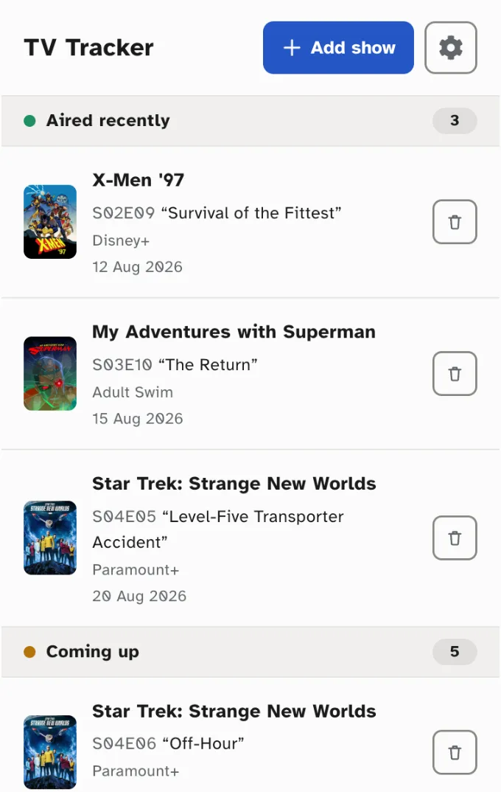
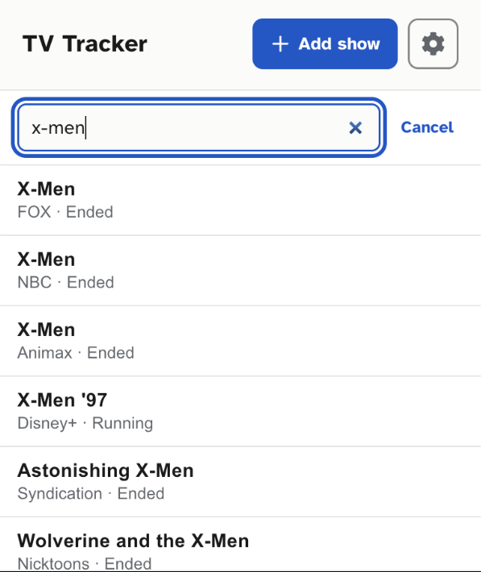
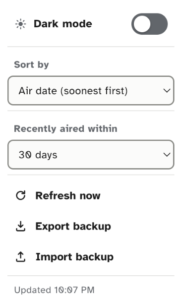

Features

Status Board
- Grouped into Aired recently, Coming up, On hiatus, and No upcoming episode
- Each show displays its TVmaze poster, so it's easy to spot at a glance
- Tap a show's name to open its page on TVmaze for more details
- A toolbar badge shows how many aired recently, without opening the popup

Search
- Search the TVmaze database to add a show by title, right from the popup
- Results show the network or streaming service and status, so it's easy to tell apart shows that share a name

Settings
- Sort by title or air date, ascending or descending
- Show data updates automatically every four hours, or refresh any time
- Light and dark mode — matches your system, or choose one yourself
- Back up your list to a JSON file, or restore it on another browser
FAQ
Why can't I mark shows as watched?
TV Tracker is built as a TV guide, not a watch-tracking checklist — it tells you what aired and what's coming up, not what you've already seen.
Why can't I find a show?
Search results come from TVmaze's database, not a list TV Tracker keeps. TVmaze doesn't have every show — especially very new, regional, or obscure titles — so a missing show usually means TVmaze doesn't have it yet, not that something's broken.
Will my list follow me to another browser or computer?
No — tracked shows are stored locally in your browser, not synced automatically. To move your list, use Export backup and Import from the settings menu.
Is TV Tracker free?
Yes, with no ads, accounts, or paid tiers. If you'd like to support development, there's an optional Ko-fi link — it isn't required to use the extension.
Privacy
No accounts, no tracking. TV Tracker only talks to the TVmaze API to fetch show data — your list stays in your browser.